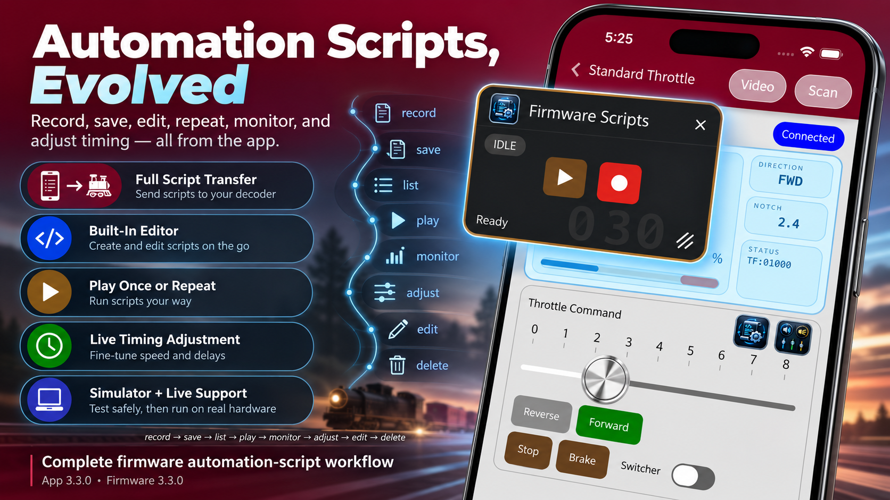

Operate it once
Run the locomotive or module exactly the way you want. PMT records the sequence so your actions can become a reusable automation.
Automation is now built directly into PMT throttles and modules. Record what you do, save it, replay it once or continuously, fine-tune the timing, and turn repeatable railroad operation into something anyone can use.

One of the most common requests was simple: “Can I make a trolley run back and forth automatically?” Now the answer is yes — and the same automation system can do much more than that.
Run the locomotive or module exactly the way you want. PMT records the sequence so your actions can become a reusable automation.
Play the automation once, or let it repeat continuously for unattended, predictable operation.
Saved automations can be opened, edited, renamed through your workflow, saved back to the device, or deleted when you no longer need them.
Speed the overall routine up or slow it down by adjusting its timing in milliseconds. Repeating scripts pick up the updated timing on the next cycle.
The trolley shuttle is the obvious example, but once repeatable scripting is available, the possibilities get much bigger.
Record a trolley moving from one end of the line to the other, pausing, reversing, and returning — then repeat the cycle automatically.
Build a routine with approach speed, stop duration, departure, and the next station sequence for a more consistent operating display.
Perfect for open houses, club displays, train shows, or home layouts where you want reliable repeated motion without constant operator input.
Record a repeatable switching move, industrial transfer, or yard demonstration and replay it consistently whenever you want.
Because automation is baked into both throttles and modules, repeatable routines can extend beyond train motion into the wider PMT ecosystem.
Use repeatable command timing to coordinate actions into a predictable routine — ideal for demonstrations, scenes, and layout effects.
What started as basic script recording and playback has evolved into a complete, user-manageable automation system.
Capture a real operating sequence from your throttle or module.
Name the automation and store it on the device for later use.
Run the routine one time or keep it looping continuously.
See whether automation is idle, playing, repeating, recording, or waiting to be saved.
Change the overall pace without rebuilding the entire automation.
Open saved automations, modify their script text, save the changes, or remove scripts you no longer need.
Automation does not have to be perfect on the first attempt. PMT is designed so you can capture the idea quickly and refine it afterward.
Stop recording, review where you are, then save it with a name or discard the recording and try again.
Timing can be reduced all the way to zero and later increased again without losing the locations of those timing points in the script.
Poor Man's Automation is about making repeatable operation accessible to the same people already using PMT to run trains, modules, sounds, lights, and layout accessories.
Record what you already know how to do, save it, and let PMT repeat it. Then refine the timing, edit the details, and build increasingly sophisticated operating routines as your railroad grows.